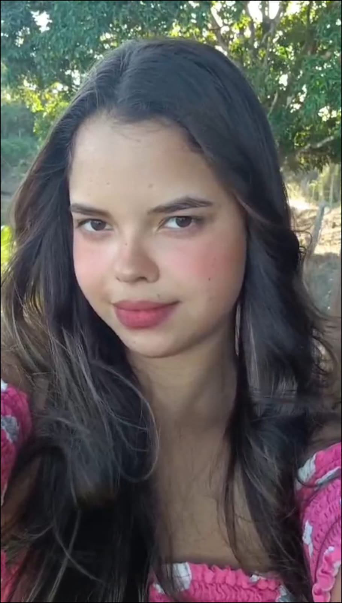
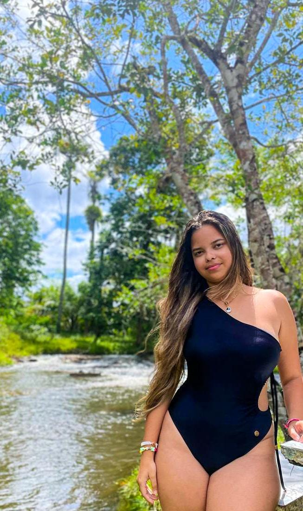

Um livro pra o meu amor❤️
Algumas páginas da nossa história.
João Marcos & Clara Suzart
Introdução
Oi, meu bem, tudo certo?
Eu não sou tão bom com palavras, mas fiz o melhor que pude.
Esse livro é uma forma de guardar um pouco da nossa história e dos momentos que fizeram você se tornar alguém tão especial para mim.
Capítulo 1
O dia em que te conheci
Clara Suzart, quem diria, né? Que em tão pouco tempo essa seria uma pessoa tão importante pra mim.
Foi tudo em uma única semana, mas foram tantas coisas que pareceu 1 ano.
Mas vamos começar pela sexta, dia 19/06/26, em que a gente se conheceu.
Eu já sabia dessa tal amiga de Sofia que veio assistir ao jogo com a gente, mas eu não pretendia nada até então, até porque pensei que tinha algo com meu amigo.
Então, por isso, era todo mundo "brother" naquele momento KKKKKKK.
Confesso uma coisa: eu não tinha a melhor impressão sua naquele momento.
Achei que você era cachaceira e nem imaginava que você tava encalhada, muito pelo contrário kkkkkkkkkk.
Mas eu tinha te achado bonita e até gente boa, só isso.
Mal sabia eu que, alguns dias depois, estaria digitando isso pra você.
Capítulo 2
Onde as coisas começaram a mudar
No dia seguinte, na festa, foi quando as coisas começaram a mudar.
Depois que nos encontramos lá, percebi uma certa proximidade sua. Eu ainda estava com um pé atrás, mas, depois de alguns empurrões de Sofia e Gustavo, eu resolvi tentar.
Ah, e foi difícil colocar minha mão na sua cintura naquele dia, tá? KKKKKKK.
Aí, no mesmo dia, ficamos pela primeira vez, e eu amei o seu beijo, tanto que fiquei querendo mais.
E você achando que eu não iria te mandar mensagem no dia seguinte kkkkkkkkk.
Mas até então eu não sabia nada de você ainda. Pensei que poderia ser só algo de momento.
Porém, não deixa de ser um dia importante, pois foi quando eu te beijei pela primeira vez e pude sentir o calor do teu corpo abraçado no meu.
Capítulo 3
Nosso primeiro emprego juntos
Tenho certeza de que nosso primeiro emprego fazendo cartas no correio vai fazer parte da nossa história, porque foi naquele banquinho que eu pude te conhecer melhor.
Foi ali que eu pude ouvir suas histórias, olhar nos seus olhos enquanto meu coração palpitava e depois te beijar após mal terminar um assunto totalmente aleatório relacionado a tragédias kkkkkkkkkkkkk.
Era tanto frio e sono, mas eu não queria ir embora.
Eu queria ficar ali, com você, te vendo sorrir e olhar no fundo dos seus olhos.
Ou, sei lá, talvez te ajudando a colocar um cinto que nem você mesma sabia, ou andar descalços na rua porque a sola da bota da sua tia soltou.
Espero que tia Daniele tenha conseguido colar kkkkk.
Enfim, fomos demitidos, mas eu nunca vou esquecer do lugar que me fez querer te conhecer mais ainda.
Capítulo 4
Família
Confesso que fiquei surpreso de me apresentar pra sua família tão cedo.
Na verdade, nem sei se era seu plano, mas acabaram me vendo do outro lado da rua te esperando de moto kkkkkkkkkkk.
Eu quase me caguei naquele dia. Pensei que seu tio ia soltar um tijolo lá de cima a qualquer momento, mas tentei me manter descontraído kkkkkkkkkkkkk.
Sua mãe e seu padrasto não pareciam estar com as melhores caras, então eu relevei. Mas tia Daniele me deixou mais tranquilo.
Que bom que todo mundo já me conhecia e sabia que eu não era uma ameaça pra você kkkkkkkkkkkkk.
Eu fiquei muito feliz no dia em que vocês me convidaram pro churrasco na sua casa e, mesmo estando com muita vergonha, aceitei ir.
Como eu iria recusar, né? Tenho certeza de que eu iria me arrepender de não ir.
Que galera gente boa, cara. Eu me senti fazendo parte da família.
Não posso esquecer também do nosso almoço na roça, né?
Foi quando eu me senti mais próximo ainda de você e da sua família.
Foram boas risadas, momentos tão leves que me fazem querer fazer parte da sua vida a todo instante.
E, mesmo que eu tenha que limpar lagoa, dirigir Kombi e varrer a casa quando eu me estressar, eu ainda quero estar com vocês.
Informação adicional: tia Daniele é minha preferida, mas não conte pra sua mãe.
Capítulo 5
Primeira noite
Acho que eu não poderia deixar de falar do dia em que "dormimos" juntos na casa de Sofia.
As lembranças não são todas maravilhosas, mas aquele momento também foi importante para eu me sentir mais conectado com você. Foi naquela noite que percebi ainda mais o quanto eu me importava com você e o quanto eu queria te ver bem.
Por isso precisei citar esse momento.
Eu fiquei com muito medo de acontecer alguma coisa. No mesmo dia, fiquei angustiado por você estar mal e não poder te ver.
E sim, foi aquele dia em que disse que estava angustiado e saí de moto na rua.
Eu chorei em casa e então fui pra rua de moto. Fiquei sentado na praça, sozinho, pensando em você, até que encontrei Sofia, e ela conseguiu me deixar mais tranquilo.
Aí voltei pra casa e descansei.
Fiquei tão aliviado em te ver bem no outro dia que você não tem noção.
Enfim, é só pra deixar claro que eu não te quero só nos momentos bons.
Eu também quero estar com você nos momentos difíceis.
Capítulo 6
Clara Suzart
Meu bem, eu quero te agradecer por ter me feito tão feliz em tão pouco tempo.
Te conhecendo melhor, eu percebi o quão esforçada e dedicada você é. Eu admiro muito você.
Claro que você é linda. Seu cabelo gigante é maravilhoso, seu corpo parece que foi esculpido, seus olhos castanhos são lindos.
Mas eu tô falando da pessoa que você é.
Tô falando da menina que escreveu mais de 100 páginas de TCC, da menina que ama ler livros, da menina que ama gatos, da menina que tá correndo atrás dos seus sonhos e se esforçando tanto, até mesmo da menina que gosta de sorvete de pão com manteiga.
Isso é raro, sabia? E eu acho isso incrível em você.
Tenho certeza de que todo esse esforço vai ser recompensado.
Você me inspirou a me tornar alguém melhor, a correr atrás dos meus sonhos com mais garra ainda e me dedicar mais.
Não porque eu quero ser melhor que você nem nada do tipo, mas porque, se Deus quiser, eu quero poder celebrar nossas conquistas juntos.
Obrigado por ter contado do seu passado, das coisas que você teve que passar e, mesmo assim, estar firme e forte aqui.
Vou te dizer uma coisa: eu queria muito poder ser sua cura, entrar na sua cabeça e apagar tudo que você passou, mas, infelizmente, nem eu e nem ninguém pode.
Só que sabe algo que eu quero muito?
É poder ser um novo capítulo na sua história.
Já ouviu falar em karma bom? Exatamente. Eu quero fazer você mais feliz.
Eu quero que você possa pensar em mim como um porto seguro, pros seus dias bons e pros seus dias difíceis.
Eu não sou perfeito. Eu tenho muitos defeitos, sou cabeça dura, muitas vezes acho que tá tudo bem quando não tá, mas sempre converse comigo quando algo te incomodar, e aí a gente pode resolver juntos.
Eu só quero te ver bem.
Enfim, acho que falei tudo que tinha pra falar.
Então, do fundo do meu coração, eu te amo, Clara.
Fim? ❤️
Ainda não vida.
Tem muita coisa pra gente escrever juntos ainda.
Capítulo Extra 1
Por que eu amo tanto a minha Clara ❤️



- ❤️ Seu cabelo é digno de ser a oitava maravilha do mundo.
- ❤️ Eu amo olhar nos seus olhos, é como observar um sonho meu.
- ❤️ Sua boca nem se fala, eu queria beijar sem parar.
- ❤️ O Seu Sorriso é lindo.
- ❤️ O som da tua risada me acalma.
- ❤️ Tua pele é macia, eu queria poder te agarrar e não soltar mais nunca.
- ❤️ Seu corpo?, é uma obra de arte tão linda que meu picasso se ergue pra aplaudir KKKKKKKK.
- ❤️ Parece uma metralhadora quando começa a falar, mas eu poderia passar incontáveis horas te ouvindo.
- ❤️ Seu esforço, sua dedicação, são coisas que não tem como eu não falar de novo, por que vc simplesmente é uma mulher impresionante.
- ❤️ Não tem nada igual a nossas conversas aleatórias.
- ❤️ O seu cheiro, NOSSA, eu te cheiro inteira mesmo depois de correr uma maratona.
- ❤️ Ter você perto, tipo, a mulher que eu amo ta aqui do meu lado e ela é MINHA mulher?. Essa é a sensação.
Capítulo Extra 2
Pequenas coisas que eu mudaria em você
Antes de tudo...
Não fica triste, viu?
Promete?
Capítulo Extra 2
IIIIIH, se perdeu
Eu não mudaria absolutamente nada em você.
Eu me apaixonei justamente pela pessoa que você é.
Com suas qualidades.
Com seus defeitos.
Com seus gostos diferentes do comum.
Eu amo tudo em você, minha gostosa.
Rala daqui, vai vai oxoxoxo.
To brincando, não vai ainda.
Mas antes de sair, eu queria te dizer...